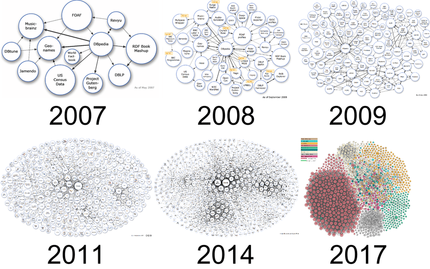
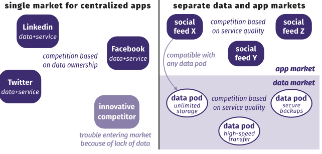

Linked Data
Tim Berners-Lee a proposé des principes pour publier des données liées (Linked Data) : utiliser des URIs,
fournir des descriptions, lier vers d'autres données. Ces principes favorisent la constitution d'un web de
données (Data Web) où des ressources sont interconnectées sémantiquement.

Source :
The Linked Data Wiki
Solid (Social Linked Data)
Tim Berners Lee
The Web as I envisaged it, we have not seen it yet.
Solid est une initiative de Tim Berners-Lee visant à redonner le contrôle des données personnelles aux
utilisateurs. L'idée : chaque utilisateur dispose d'un pod (personal online data store) où il conserve ses
données, et les applications accèdent aux données avec autorisation explicite. Solid combine les idées du Web
sémantique et des Linked Data pour proposer une approche décentralisée et respectueuse de la vie privée.

Source :
Solid : Linked Data for personal data management
Avantages : autonomie des utilisateurs, séparation des données et des services, interopérabilité des données
via RDF/JSON-LD. Limites : adoption encore limitée, défis d'expérience utilisateur et d'infrastructure
Ruben Verborgh:
Three paradigm shifts we need to prepare for:
- End users become data controllers
- Apps become views.
- Interfaces become queries.
Cas d'usage du Web sémantique
Exemples : moteurs de recherche enrichis, assistants vocaux, intégration de données scientifiques, catalogues
de bibliothèques, et agrégation de données ouvertes (open data) pour la recherche et l'administration